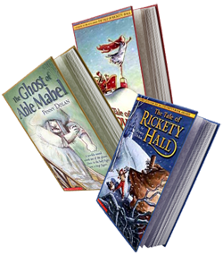

Table of Contents Links
English Wiz – Lower Primary
English Wiz – Upper Primary
English Wiz – Lower Secondary
English Wiz – Upper Secondary
English Wiz – Senior Secondary
English Wiz – Lower Primary
English Wiz is fun and encouraging and uses teaching methods which are educationally well established and sound. Computerwise, it is very friendly and easy to use. The presentation of the program is consistent throughout, and we have developed an interface which particularly supports teaching English. All tutorials have recorded commentaries, to give better understanding and make learning more enjoyable.
Throughout the program, when answering a question, the student must carefully check that he/she is confident with his/her answer, and then click the OK button on the bottom right-hand corner of the screen. Even very young children can manage to do that.
At five years old, children are just reaching the age of "phonemic awareness" (the ability to relate speech to the written word). Of course, this is the age when children start school. At this stage they learn best through play, and our teachers have devised activities to help your child familiarise with the sounds of the alphabet and use simple blending techniques to read and learn words.
Activities on English Wiz - Lower Primary are fun to use and educationally sound. English Wiz uses the power of the computer to combine reading, listening, learning and playing. English Wiz - Lower Primary supports the first steps in reading and familiarisation with the alphabet, and associating words and pictures. We particularly focus on phonemic awareness activities (phonics) for these junior lessons.
"Phonics Challenge" is a word game which teaches how to blend three sounds together to make a word. The voice reads the letter sounds and the word and the child picks out the letters on the phonics keyboard. The keys make the sound of the letter. Suitable three letter words are randomly generated.
Learning strategies include phonics methods of mastering the concept of the sounds that letters make, and understanding how those sounds blend together to make new sounds. We also include "sight words" activities, the alphabet, colours, consonant blends and sentence building.
"Look and Listen" combines sight, sound, word recognition, comprehension and memory skills. The child listens to the recorded sentence and then chooses the words, to build sentences using easy Drag and Drop. To avoid confusion for beginners, only the (two or three) words needed are displayed.
Learning strategies include phonics methods of mastering the concept of the sounds that letters make, and understanding how those sounds blend together to make new sounds. We also include "sight words" activities, the alphabet, colours, consonant blends and sentence building.
English Wiz - Lower Primary focuses on lessons and activities to encourage the child to cope successfully with the early years at school. We would like you to encourage your child to use these lessons as a past-time, as repetition builds familiarisation. Working (playing) with English Wiz - Lower Primary, will help your child develop the mental skills needed to cope with the learning strategies used in schools today.
English Wiz – Upper Primary
English Wiz – Upper Primary can be used as soon as your child has passed the "beginner reader" stage and gone on to being able to read a written story. Start with the first chapter – this should be easy at this stage.
Do not expect your child to know everything on English Wiz – Upper Primary. The purpose is to learn gradually, at their own pace, through practice and exploration of the ideas introduced in the lessons.
Listen and learn – it is fun to try and get the answer right, but first you need to listen carefully to the lesson. We aim to inspire and instruct – so please encourage your child to listen to the tutorials and try to read them too!
In six and seven year olds, text pick up is very strong and children start to read stories and write simple words and sentences confidently, if given the right encouragement.
By eight years old, reading skills are "internalised" (built into the brain) – like learning to talk at an earlier age. However, without an interest in reading, these skills can slip and the student may not reach his/her full-potential. The beauty of English Wiz is that the child doesn't realise he or she is reading and comprehending, because he/she is reading with a purpose – to beat the computer.
How do you know whether a child is taking in the meaning of what he/she is reading, when he/she is reading out his/her school "Reader" books? In English Wiz, we make the sentences interactive – the student has to drag and drop a part of a sentence or word, to make it fit in with the meaning. So they really do have to think about what they are reading.
We continue to use phonemic activities – such as consonant blends and rhyme. These activities help the child to develop a "feel" for language and so listen and write better. Making a rhyme is a traditional way of inspiring young people to enjoy words. Advertising jingles and pop songs are easy to remember because they have rhyme and rhythm. We use rhyme to re-enforce the phonic blends and help relate sound and spelling.
Spelling and Vocabulary
Listen and learn: our spelling lessons are grouped according to their phonics, with lists of words obeying the same spelling rule. The emphasis is on learning the rule for spelling or reading a sound. The cryptic clues help to understand the meaning and give an element of comprehension to the exercise. This is a fun way to learn and includes word games to challenge the whole family.
"Comprehension" and "Cloze" Exercises
In English teaching, "Comprehension" exercises involve reading a text, understanding what you read and being able to answer questions about it. In English Wiz Primary we also include a voice-over of the comprehension, so that the understanding is based on listening as well as reading.
"Cloze" exercises are short texts where the student has to select missing words from an accompanying word list. Usually there are some words which look as if they could go in more than one place. It is up to the student to read carefully and consider where those words best fit in, to make the whole text make sense.
A step in the story "Ruby the Dragon" contributed by the well-known children's author, Penny Dolan.
English Wiz – Lower Secondary
English Wiz is fun and encouraging and uses teaching methods which are educationally well established and sound. The presentation of the program is consistent throughout, and we have developed an interface which particularly supports teaching English.
Throughout the program, when answering a question, the student must carefully check that he/she is confident with his/her answer, and then click the OK button on the bottom right-hand corner of the screen.
The English Wiz - Lower Secondary program helps the student to enjoy reading and understand it better. Reading is improved with practice - just like driving a car, or hitting a ball. English Wiz challenges you to find the right word, without being conscious that you are reading and learning.
English Wiz also helps you to write with: better grammar; correct spelling; proper punctuation and more interesting sentences.
All tutorials have recorded commentaries, to give better understanding and make learning more enjoyable.
Secondary students tend to struggle with tasks given for English homework, because they have never really been taught how to do a Comprehension. How ever can you write about a news item in the paper, when your comprehension skills are not strong and the subject and vocabulary are unfamiliar?
We introduce students to comprehension with anecdotes about familiar situations, so that they can develop their skills within their comfort zone. You can refer to the text, while answering the question, in the comprehension lesson – and afterwards you can do a memory test to see if you have retained the important points of the story. Memory skills are not only vital when studying for exams – they are much needed in the workplace.
 Creative Writing
Creative Writing
We are very proud to have Penny Dolan on our writing team. Penny is a children's author of renown, living in North Yorkshire in the UK. Her prize winning books include "The Tale of Rickety Hall" and "The Ghost of Able Mabel". Penny is a popular speaker with both infant and junior children, and teaches creative writing at School Book Weeks, Literacy Events and Creative Writing Seminars for adults. Penny has contributed a section on story writing and also various exercises throughout the English Wiz program.

Yes, it nice to get the answers right, but these lessons are about more than just crashing through and entering the answers. If you listen carefully to the teacher commentaries and read through your work and think, before you press the OK button – you will gain much more.
To reinforce learning, go over every lesson or activity again from time to time. This helps you to develop your skills and improve your understanding.
English Wiz – Upper Secondary
English Wiz - Upper Secondary is designed to bring your child's writing skills up to the standard required to succeed in Senior School.
The emphasis is on achieving a high standard in writing and comprehension skills. We are now applying the skills touched on in the Lower Secondary program, to more demanding situations. The student is asked to listen to the teacher, and think carefully about the exercise.
Lessons are still in the same easy to use format, but are at a higher level with an emphasis on understanding the structure of language. This helps with writing essays and text analyses. In school, marks are lost if grammar and writing style are not up to standard.
English Wiz - Upper Secondary also focuses on spelling, vocabulary, writing conversation and reported speech, the indefinite and definite articles, verb tenses, literature and poetry analysis.
English Wiz – Senior Secondary
As students progress in their senior years of English, it is imperative that they further develop their understanding of language and literature. In the senior school curriculum, knowledge of persuasive language techniques is crucial to success. An awareness of terms such as 'rhetorical question' and 'alliteration' will help them be on par with other students but in this program they are introduced to more detailed forms of analysis such as 'anaphora' and 'anadiplosis'.
Students work through this program in a series of tutorials which explain and demonstrate the techniques, then have the opportunity to utilise the techniques in the added questions. Letters to newspapers, essays and opinion pieces allow students to test what they are learning. English Wiz will give students the edge over others who are not taught these terms and techniques in school.
Literature and Texts
The Unit also focuses on important literature such as William Shakespeare's plays, which both encourages student interest in broader reading and introduces them to new literary concepts and themes - all crucial to building wider awareness of text and context. Questions are based on tutorials but also require critical thinking and some self-based research to expand problem solving skills.
In the senior years of schooling, students must also become adept at examining various themes and contexts and how these relate to our daily lives and experiences. The English Wiz program explores four major themes for study and allows students, through the questions posed, to interpret readings in a way which takes into consideration, the social and cultural contexts surrounding them. This unit builds creativity, encourages critical thinking and examines relevant concepts of the world.
Grammar is another area that is often neglected in senior English and for this reason, we revisit some lessons regarding grammar usage and focus on common grammatical errors that students need to avoid. Part of the grammar unit includes learning the foreign roots of particular words, knowledge of which is very useful in interpreting unknown words students may encounter.
By the end of the senior school program, students will have gained increased ability to read and write in a much more critical and thorough manner, be able to interpret new texts that they are set and be able to successfully tackle essays and context questions required of them in their final years of schooling.